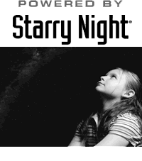

Starry Night
When Simulation Curriculum released v7 of their awarding winning astronomy program Starry Night, written in C++ code for Windows and OSX platforms, they asked me to add a number of features. including exoplanet modeling. Written in C++ code for Windows and OSX platforms.
Simulation Curriculum hired me to do some additional upgrades to the Starry Night C++ code to prepare the product for a new release.